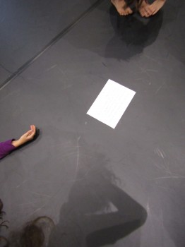

Forschungsbericht Tanzimprovisations- und Diskursformat “Twist&Talk” (CON.ACT 1) Christian Apschner, Maria Probst
KURZFASSUNG Der vorliegende Text fasst unsere Erkenntnisse und Schlüsse aus der Tanzimprovisations- und Diskursreihe CON.ACT - "Twist&Talk" im Zeitraum 9-11/2018 im Tanzquartier Wien und in der KünstlerInneninitiative Im_flieger zusammen. CON.ACT - “Twist&Talk” ist eine Weiterentwicklung des über sieben Jahre im Tanzquartier Wien verorteten open level Tanzimprovisations Formates "Sharing the Dance". Im Laufe der Jahre entwickelten wir geeignete Methoden um dem Wunsch nach Community-Building, Inklusion aller Interessierten und dem Wahren des künstlerischen Forschungs-Anspruchs gerecht zu werden. "Sharing the Dance" avancierte zu einem niederschwelligen und gleichzeitig anspruchsvollen körperlich-kognitiv-künstlerisch-tänzerischen Lernformat. Im Zuge des Rechtsrucks 2016/17/18, nicht nur innerhalb der österreichischen Gesellschaft und Politik, drängten gesellschaftspolitische Themen in den Vordergrund. CON.ACT” ist eine partizipative, künstlerisch-wissenschaftliche Recherche ob und wie eine spezifische Praxis zeitgenössischer Tanzimprovisation und von Somatic Movement Practices eine Methode im Umgang mit gesellschaftlichem Wandel darstellt und das Potential zu gesellschaftspolitischem Handeln in sich birgt. Die Grundidee des ersten Realisierungsschrittes von CON.ACT (CON.ACT 1) war, vorranging das inneliegende Lernpotential herauszuarbeiten und zu untersuchen. CON.ACT umfasste drei öffentliche “Twist&Talk” Sessions zum Thema "In, Out, With" sowie zwei Kleingruppen-Treffen (Peer-Groups) mit geladenen TeilnehmerInnen, weiters eine Recherche- und Auswertungsphase wissenschaftlicher Veröffentlichungen zu ähnlich gelagerten Formaten sowie eine Befragung der TeilnehmerInnen über ihre individuellen Erfahrungen mittels anonymen Online-Fragebogens jeweils im Anschluss an die drei offenen Termine. Im Zuge der Auswertung von 45 Fragebögen konnten wir äußerst wertvolle Erkenntnisse zur Weiterentwicklung des Formats gewinnen. Wie erwartet stellte sich heraus, dass es sich bei “Twist&Talk” um ein relativ anspruchsvolles Format handelt, dass ein persönliche Bereitschaft der TeilnehmerInnen braucht, sich auf die jeweiligen Fragestellungen und Gruppenprozesse einzulassen und sich mit dem Erlebten auseinanderzusetzen. Unsere Frage “Könntest du im Nachhinein sagen, du hast etwas aus deiner Teilnahme an “Twist&Talk” gelernt? haben 54% der TeilnehmerInnen mit “Ja, trifft zu”, 46% mit “Ja, zum Teil” und mit 0 % “Nein, eher nicht” beanwortet. Auf die Frage “Wenn ja, wie könntest du dieses Lernen beschreiben?" kamen zahlreiche sich ähnelnde Antworten, die ein erweitertes Bewusstsein über eigene Gestaltungsmöglichkeiten im Hinblick auf “In, Out, With” thematisierten. Die weiteren von den TeilnehmerInnen beschriebenen Lernerfahrungen waren ebenfalls mehrheitlich am Thema von “Twist&Talk” nämlich “In, Out, With”, also der Frage von Zugehörigkeit, Miteinander und Ausschluss, angeknüpft, beschrieben aber individuell recht unterschiedliche Aspekte. Auf die Frage, ob dem Format gesellschaftspolitische Relevanz zugemessen wird, antworteten 32% der TeilnehmerInnen “Ja, unbedingt”, 61% sehen eine teilweise gesellschaftspolitische Relevanz und 7% werten das Format als “Nein, eher nicht” gesellschaftspolitisch relevant. Aus den Ergebnissen können wir schließen, dass es gelungen ist, "Twist&Talk" an einem speziellen gesellschaftspoltischem Thema anzuknüpfen und als Ressource für kollektives und individuelles Lernen zu nutzen. Durch die persönliche Beschreibung der einzelnen Lernerfahrungen in den Fragebögen konnten wir einen überaus wertvollen Einblick in individuell unterschiedliche bzw. sich ähnelnde kollektive Aspekte dieser Form des Lernens gewinnen. Wir nehmen an, dass Tanzimprovisations- und Diskursformate wie “Twist&Talk” hinsichtlich ihres individuellen und kollektiven Lernverhaltens deshalb effizient sind, weil sie sehr gute Rahmenbedingungen entsprechend der Erkenntnisse der neueren Kognitionswissenschaften und Embodiment-Theorien betreffend “Lernen” schaffen (vgl. "4E-Cognition"). Aufgrund unserer Erkenntnisse gehen wir davon aus, dass CON.ACT gut auf andere Fragestellungen übertragbar ist und es sehr sinnvoll wäre, das daraus resultierende Lernpotential über den Tanz-/Performancekontext hinaus einem erweiterten Kreis an Personen-, Berufs- oder Gesellschaftsgruppenzugänglich zu machen bzw. das Format zur Anwendung auf spezifische Zielgruppen hin zu adaptieren (CON.ACT 2). Dabei halten wir es für zweckmäßig mit einer konstanten Personengruppe über mehrere Termine hinweg kontinuierlich zusammenzuarbeiten um die somatischen Aspekte näher aufzubereiten und dem notwendigen Diskurs breiten Raum zu geben. Darüberhinaus wäre es sehr spannend in einem weiteren Projekt den künstlerisch-ästhetischen Aspekt des Formates, im Rahmen eines vertieften künstlerischen Forschungssettings, herauszuarbeiten und im Zuge einer Performance zu präsentieren. Wir danken dem Tanzquartier Wien sowie der KünstlerInneninitiative Im_flieger für die mögliche Realisierung und vor allem auch allen TeilnehmerInnen von “Twist&Talk” für das gemeinsame Forschen. Wir werden unsere Ideen zu CON.ACT 2 konsequent weiterverfolgen und sind in diesem Zusammenhang sind für jede Finanzierungsidee dankbar.
_________________________________________________________________________________________
1. EINLEITUNG und VORGESCHICHTE Der vorliegende Text fasst unsere Erkenntnisse aus der Tanzimprovisations- und Diskursreihe "Twist&Talk" im Zeitraum 9-11/2018 im Tanzquartier Wien und in der KünstlerInneninitiative Im_flieger zusammen. CON.ACT 1 - "Twist&Talk" ist als erster Realisierungsteil des übergeordneten durch "rollingpoint - Verein für Contact Improvisation und artverwandte Tanz- und Bewegungsformen" initierten Projektes CON.ACT zu verstehen und wurde von maRia Probst und Christian Apschner konzipiert und geleitet. CON.ACT bzw. “Twist&Talk” ist ist wiederum eine Weiterentwicklung des über sieben Jahre im Tanzquartier Wien verorteten open level Tanzimprovisations Formates "Sharing the Dance". Der Kern dieser sich kontinuierlich weiterentwickelnden Improvisations-Nachmittage lag in einem somatischen Zugang zu Tanzimprovisation und einer großen Vielfalt an Themen und Zugängen oft in Verbindung mit anderen Kunstrichtungen. Im Laufe der Jahre entwickelten wir geeignete Methoden um dem Wunsch nach Community-Building, Inklusion aller Interessierten und dem Wahren des künstlerischen Forschungs-Anspruchs gerecht zu werden. Es sollte kein Konsumations- oder reines Unterhaltungsformat sein. Dabei war es uns (Kerstin Kussmaul/ursprüngliche Initiatorin des Formates, Christian Apschner, maRia Probst und weitere KollegInnen) ein Anliegen, das Erlebte auch zur Sprache zu bringen und zu reflektieren. In den Reflexionsrunden wurde von der bunten Vielfalt an TeilnehmerInnen mit unterschiedlichsten Berufs- und Erfahrungshintergründen immer wieder das große Lernpotential des Formates angeprochen. Vor allem aber auch wir als Leitende, konnten in den einzelnen Sessions jeweils ganz viel Neues hinzulernen und umfassende Erfahrungen gewinnen. Der Wissensaustausch und -abgleich sowie die Verschränkung und mögliche gesamtheitliche Zusammenschau der gewonnenen Erfahrungen aus unterschiedlichsten Wissenskategorien ist dabei besonders hervorzuheben. "Sharing the Dance" avancierte somit zu einem niederschwelligen und gleichzeitig anspruchsvollen körperlich-kognitiv-künstlerisch-tänzerischen Lernformat. Im Zuge des Rechtsrucks 2016/17/18, nicht nur innerhalb der österreichischen Gesellschaft und Politik, drängten gesellschaftspolitische Themen in den Vordergrund. Gepaart mit dem Wunsch das Projekt weiterzuentwickeln entstand das Format CON.ACT. Die Grundidee von CON.ACT ist, in einem ersten Schritt das gesellschaftspolitische und -bildende Lernpotential im Umgang mit den aktuellen gesellschaftlichen Veränderungen zu untersuchen (CON.ACT 1) und dieses in einem zweiten Schritt einem breiteren Personenkreis bzw. neuen Zielgruppen zugänglich zu machen (CON.ACT 2). "CON.ACT” ist somit eine partizipative, künstlerisch-wissenschaftliche Recherche ob und wie eine spezifische Praxis zeitgenössischer Tanzimprovisation und von Somatic Movement Practices eine Methode im Umgang mit gesellschaftlichem Wandel darstellt und das Potential zu gesellschaftspolitischem Handeln in sich birgt.
2. CON.ACT 1 / “Twist&Talk” - THEMA, HERANGEHENSWEISEN, ABLAUF, ZIELE CON.ACT 1 wurde im Herbst 2018 in Kooperation mit Tanzquartier Wien und der KünstlerInneninititative Im_flieger realisiert und umfasste: X Drei öffentliche “Twist&Talk” Sessions zum Thema "In, Out, With" zu je 3,5h, 18-28 TeilnehmerInnen X Zwei Kleingruppen-Treffen (Peer-Groups) mit geladenen TeilnehmerInnen zu je 4h, 6-10 TeilnehmerInnen X Eine Recherche- und Auswertungsphase wissenschaftlicher Veröffentlichungen (schwerpunktmäßig aus den Disziplinen Kognitions- und Tanzwissenschaften) zum Thema X Eine Befragung der TeilnehmerInnen mittels anonymen Online-Fragebogens jeweils im Anschluss an die drei offenen Termine über ihr individulles Erleben und Lernerfahrungen X Eine Evaluierung der im Rahmen von Sharing the Dance entwickelten Herangehensweisen im Hinblick auf die Übertragbarkeit auf die Kernfrage von “Twist&Talk”, inwieweit inviduelles und kollektives somatisches Lernen in Tanzimprovisationsformaten dazu beitragen kann, adequat mit aktuellen gesellschaftspolitischen Entwicklungen umzugehen. X Zusammenfassung der Schlüsse für die Weiterentwicklung des Formates zu
Ausschreibungstext für “Twist&Talk: Herangehensweisen und Ablauf: Die inhaltlichen Schwerpunkte der drei öffentlichen Termine gestalteten sich wie folgt: TQW Sa 29.09.2018 15.00-18.30h: TQW Sa 20.10.2018 15.00-18.30h: Im_flieger Sa 10.11.2018 15.00-18.30h: Als Beispiel für einen Score in diesem Zusammenhang möchten wir das Setting, in dem es darum ging körperlich-tänzerische Gruppen-Bezüge als neue Gruppe aufzunehmen, näher beschreiben: Vorfeld: Es handelte sich um den zweiten Termin. Die Gruppe bestand aus Einzelnen die am ersten Termin zugegen waren und einem Hauptanteil NeueinsteigerInnen (meist mit “Sharing the Dance” Vorerfahrung). Wir hatten bereits eine Beginn-Runde in der wir die Selbstverantwortlichkeit, “Safe Space” im Sinne von “Grenzen wahren dürfen und sollen”, den Umgang mit Daten und Medien und den Forschungscharakter des Ganzen angesprochen. Es folgte ein warm up, lose inspiriert von Adam Benjamin, indem wir uns frei im Raum bewegten, uns vorstellten wir bewegten uns in einer Gesellschaft in der zufällige Berührung nicht zwingend vermieden wird. Wir richteten unsere Aufmerksamkeit auf die Qualität dieser zufälligen Berührungen und was sie in uns auslösen. Es folgte ein sehr frei gestaltbares Setting in Kleingruppen, in dem Berührung als Form von Kommunikation ausgelotet wurde. Wir verlagerten nach diesen Erfahrungen den thematischen Schwerpunkt in Richtung Gruppe. Gruppenscore: Wir forderten die TeilnehmerInnen auf, vier Gruppen zu gleicher Anzahl (wie Magie, ging sich das an diesem Termin problemlos aus) zu bilden. Jeweils zwei Gruppen tanzten in Bezug zueinander. Wir teilten den Raum in zwei Hälften, dadurch konnten beide Konstellationen gleichzeitig tanzen. Gruppe 1 bildete einen Kreis und begleitete die Gruppe 2 mit ihrer Aufmerksamkeit. Die TeilnehmerInnen aus Gruppe 2 entschieden sich jeweils und in Bezug zu den Anderen für einen Ort an dem sie beginnen wollten. Gruppe 2 improvisierte gemeinsam und fand schließlich ein Ende in einer “Stillness”. Die TeilnehmerInnen aus Gruppe 1 nahmen jeweils eine Körperform einer Person aus Gruppe 2 an. Diese Art “Tableau Vivant” bildete den Beginn der Improvisation der Gruppe 1. Gruppe 2 begleitete nun Gruppe 1 in dem sie einen Kreis bildete und so gemeinsam mit ihrer Aufmerksamkeit den Raum für Gruppe 1 schuf. Es folgte der zweite “Loop”. Dieser Nachmittag endete mit einer relativ offenen Gruppenimprovisation und einer leider zu kurz geratenen Schlussreflexion. Generell waren die Nachmittage immer von verschiedenen Feedback-Loops, Reflexions- und “Harvesting”- Scores durchzogen wie z.B. einen Gedanken und eine “Sensation” zum Erlebten auf eine Karteikarte zu schreiben. Weiters stellten wir zwei Kameras zur Verfügung, die Jede/r zu jedem Zeitpunkt als eine Art verlängertes Körperteil bedienen konnte u.a. Peergroups:
Ziele dieser ersten Etappe von CON.ACT waren u.a. auch
3. FRAGEBOGENAUSWERTUNG und TEILNEHMERiNNEN-FEEDBACK Nach jeder der drei offenen “Twist&Talk” Sessions wurde ein anonymer Fragebogen via surveymonkey an alle TeilnehmerInnen, die sich DVO-konfrom dazu bereit erklärt hatten mitzumachen, ausgesandt. Unser Ziel war es möglichst von allen TeilnehmerInnen Feedback über die einzelnen Termine zu erhalten (und nicht nur von denjenigen Personen, die sich in den Feedbackrunden zum Ausdruck gebracht hatten). Eine Rückbetrachtung mit einem Zeitabstand von einigen Tagen lässt aus unserer Sicht auch eine neutralere Bewertung des Geschehenen zu als direkt in den öffentlichen Gruppensettings und ermöglicht eine Bewertung der Nachhaltigkeit des Erlebten. In den Fragebögen mit jeweils sieben bis zehn Fragen wurden Interessen und Motivationen der TeilnehmerInnen erhoben und das individuelle Erleben sowie Befindlichkeiten der TeilnehmerInnen während der einzelnen Ablaufschritte und Improvisations-Scores der jeweiligen Sessions abgefragt. Der Schwerpunkt der Erhebung lag jedoch in der Abfrage der jeweiligen Lernerfahrungen. Ingesamt wurden 45 Fragebögen mit einem durchschnittlichem Zeitaufwand von ca 15-20 min für die Beantwortung der einzelnen Fragebögen retourniert. Das sind in etwa 70% bezogen auf die TeilnehmerInnenzahl. Im folgenden sind die aussagekräftigsten Ergebnisse der Fragebogenauswertung zusammengefasst.
Motivation der TeilnehmerInnen an Twist&Talk teilzunehmen: Beispiel für eine Teilnehmermotivation: Vorerfahrungen der TeilnehmerInnen in Bezug auf Tanzimprovisation und/oder somatisches Lernen: Erleben und Empfinden der TeilnehmerInnen während der Teilnahme: In einigen Fällen wurden die auftauchenden Emotionen und die große TeilnehmerInnenzahl als persönliche Herausforderungen aber auch das daraus resultierende Lernpotential angesprochen. Der Raum wurde von den meisten TeilnehmerInnen als spannendes und experimentelles Lernfeld mit unterschiedlichsten Befindlichkeiten beschrieben. Nachwirkungen des Formates: Lernerfahrungen aus den Formaten: Könntest du im Nachhinein sagen, du hast etwas aus deiner Teilnahme an “Twist&Talk” gelernt? Wenn ja, wie könntest du dieses Lernen beschreiben? Folgende Antworten werden als Bespiele angeführt: “Habe wieder erfahren, dass Gedanken nur Gedanken sind, sprich “Konstrukte”, z.B. “so viele Menschen zum fürchten….da geht nichts…. Wurde wieder eines Besseren belehrt” “dass ich selbst zu einem bestimmten Grad bestimme, wie ich eine Situation erlebe und wie ich darin agiere” “wenn ich den Fokus auf “meine” Gruppe lege blende ich unbewusst die anderen Menschen aus, die nicht in der Gruppe sind”. “Der Gewinn für mich entsteht (glaube ich) besonders aus der Kombination aus Bewegen und Sprechen, das sich abwechselt und so jeweils in der nächsten Runde Elemente aus der einen Form in die andere einfließen können. Oder auch anders gesagt: im Bewegen zu einem Thema komme ich auf andere Dinge/Gedanken/Erkenntnisse, als wenn ich "nur" darüber spreche. Das Ganze gewinnt dann aber wiederum durch den verbalen Austausch mit anderen - das wieder ins Bewegen mitnehmen und esentsteht ein Kreislauf” “Ja, habe sicher etwas gelernt, aber ich kann es jetzt nicht beschreiben.” “Ich habe gelernt, die Frage nach gesellschaftlicher und politscher Relevanz meiner Arbeit wieder neu zu stellen. Meine Teilnahme hat für einen Moment den Fokus wieder darauf gerichtet und mich wachgerüttelt, alle meine Fragen noch deutlicher auf diese Relevanz hin zu artikulieren. Und es hat mir auch wieder deutlich gemacht, wie sehr die Körperarbeit und Arbeit mit Tanz und Performance eines der höchst politischsten Felder ist überhaupt mit aber einer geringen Wahrehmung der gesamten Gesellschaft. Diese Diskrepanz - die auch an der Sprachlichkeit/Nicht Sprachlichkeit/andersartige Sprachlichkeit liegt - wurde mir erneut scharf bewusst. Gerade jetzt im Fragebogen ist es für mich unheimlich interessant und lehrreich zu sehen, wie ich antworte im Bezug auf das Erlebte, auf das, was wir zusammen gemacht haben. Zu verstehen, wie ich Entscheidungen getroffen habe, in welchen Momenten ich mich wie gefühlt habe, und warum, ist sehr wichtig für mich. Und durch das Schreiben jetzt, lässt es sich besonders gut in mir einschreiben als reflektierte Erfahrung”. Frage, ob dem Format gesellschaftspolitische Relevanz zugemessen wird: Auch zu den Antworten dieser Frage ein paar charakteristische Beispiele: “gesellschaftlich relevant auf jeden Fall, weil ich dadurch, dass ich erkannt habe, dass ich mich selbst ausschließe, auch merke, dass das eine Entscheidung ist und ich mich, wenn ich den Mut aufbringen kann, anders entscheiden kann und so anders auf Menschen zugehen kann und damit verändern kann.” “Ja so leben wir im Kleinen, im Großen” “Ja allerdings im sehr abstrakten Sinne, für mich war die Aussage, dass unser Umfeld uns beeinflusst, manchmal ohne dass wir es merken, aber dass auch wir beeinflussen können.” “Ja, fand ich relevant, weil das Erleben von “in – out – with” mit den expliziten politischen Bezügen, die in der Einladung aber auch vor Ort angesprochen wurden, Erkenntnis ermöglicht darüber, was “in – out – with” bedeuten kann, wie es sich herstellt und welche Handlungsmöglichkeiten wir haben.” “Thematisch relevant in jedem Fall, aber nicht mit gesellschaftspolitschem Input.” “Ich habe immer wieder die Ausgrenzung /Abschiebung von Asylanten im Kopf gehabt” “Ja, allein schon deswegen, weil wir eine Situation aus dem Alltag für unsere Geschichte (die wir einer anderen Person erzählt haben) wählen sollten, und damit schon eine Rückkoppelung stattgefunden hat zu dem, was wir Tag für Tag (er)leben. Ich habe auch in den folgenden Tagen ein erhöhtes Bewusstsein für "dabei oder nicht dabei sein" gehabt und ich fand es sehr gut, dass ihr aufgefordert habt, das Körperempfinden, also den somatischen Anteil an den Erlebnissen bewusst zu spüren, denn das kann ich wiederum mitnehmen in andere Situationen.” Vereinzelt wurde von TeilnehmerInnen der Wunsch geäußert, “Twist&Talk” zu einem Performanceprojekt weiterzuentwickeln.
4. EMBODIMENT-THEORIEN und die SICHTWEISE der KOGNITIONSWISSENSCHAFTEN Wir gehen davon aus, dass Tanzimprovisations- und Diskursformate wie “Twist&Talk” hinsichtlich ihres individuellen und kollektiven Lernverhaltens deshalb effizient sind, weil sie sehr gute Rahmenbedingungen entsprechend der Erkenntnisse der neueren Kognitionswissenschaften und Embodiment-Theorien betreffend “Lernen” schaffen. In diesem Zusammenhang sollen einige Grundlagenbegriffe der Kognitionswissenschaften kurz dargestellt werden. Die jeweiligen Textausschnitte wurden zum Teil Wikipedia entnommen und gekürzt. Embodiment (deutsch: Verkörperung, Inkarnation oder Verleiblichung) ist eine These aus der neueren Kognitionswissenschaft, nach der Bewusstsein einen Körper benötigt, also eine physikalische Interaktion voraussetzt. Das Kognitionsverständnis des Embodiment entspricht etwa dem, was mittlerweile über den Vorgang der Wahrnehmung bekannt ist: Die Wahrnehmung ist demnach kein Prozess der Abbildung sensorischer Stimuli auf ein inneres Modell der Welt, sondern eine sensomotorische Koordination, die sich immer im Gesamtkonzept eines handelnden Wesens ereignet. Es ist nicht nur so, dass sich psychische Zustände im Körper ausdrücken („nonverbal“ als Gestik, Mimik, Prosodie, Körperhaltung), es zeigen sich auch Wirkungen in umgekehrter Richtung: Körperzustände beeinflussen psychische Zustände. Beispielsweise haben Körperhaltungen, die aus irgendeinem Grund eingenommen werden, Auswirkungen auf Kognition (z. B. Urteile, Einstellungen)und Emotionalität. Intermodalität: Unter Intermodalität versteht man im psychologisch-medizinischen Sprachgebrauch die Fähigkeit, Wahrnehmungsinhalte aus verschiedenen Sinnesgebietenmiteinander zu verbinden. Ein normal entwickelter Mensch lernt zum Beispiel, aus dem Erklingen einer Stimme auf die dazugehörige Person zu schließen. Oder er kann aus Morsezeichen Buchstaben erkennen oder aus Verkehrszeichen Gebote und Verbote ableiten usw. Es werden also verschiedene Teilaspekte unserer Erlebniswelt zu komplexen Erkenntnissen zusammengefügt. Enaktivismus: Enaktivismus ist ein theoretischer Ansatz innerhalb der Kognitionswissenschaften. Er basiert auf der Vorstellung, dass Kognition sich aus der Interaktion von Lebewesen mit ihrer Umwelt entwickelt. Dabei ist zentral, dass das Lebewesen körperlich mit der Umwelt interagiert. Der enaktivistische Ansatz überschneidet sich weitgehend mit dem der Embodied Cognitive Science. Der Enaktivismus kritisiert ältere Ansätze der Kognitionswissenschaften, die Geist (Mind) auf mentale Repräsentationen zurückführen wollen, und versteht sich als Alternative zu Kognitivismus, Computationalismus und Dualismus. 4E-Cognition: 4E-Cognition steht für Embodied, Enactive, Embedded und Extended Cognition und betont den gesamtheitlichen Aspekt von Kognition: Vergleiche folgender auf youtube abrufbarer Vortrag: https://www.youtube.com/watch?v=HW0JnjgCO3o Intersubjektivität: Intersubjektivität drückt aus, dass ein (komplexerer) Sachverhalt für mehrere Betrachter gleichermaßen erkennbar und nachvollziehbar sei: Man ist sich beispielsweise darüber einig, wie man etwas wahrnimmt, wie man es einordnet, oder was es bedeutet (z. B. „Fahrräder sind eine nützliche Erfindung“). Empathie: Empathie steht in engem Zusammenhang mit Intersubjektivität und bezeichnet die Fähigkeit und Bereitschaft, Empfindungen, Emotionen, Gedanken, Motive und Persönlichkeitsmerkmale einer anderen Person zu erkennen, zu verstehen und nachzuempfinden.
5. Relevante WISSENSCHAFTLICHE VERÖFFENTLICHUNGEN in Bezug auf Contact-/Tanzimprovisation In Zuge der Vorbereitungen des Projektes wurde u.a. auch eine Literaturrecherche über relevante wissenschaftliche Veröffentlichungen zu ähnlich gelagerten Foschungsprojekten durchgeführt. Die folgenden aus der großen Vielfalt von Veröffentlichungen ausgewählten zum Projekt passenden Veröffentlichungen wurden hinsichtlich der konkreten Übertragbarkeit ihrer Aussagekraft auf “Twist&Talk” analysiert. Die jeweiligen Arbeiten sind indirekt in unserer Projekt eingeflossen. Die ausgedruckten Texte lagen während der öffentlichen Termine und Peergroup-Treffen von “Twist&Talk” zur Einsichtnahme für die TeilnehmerInnen auf. Teilweise dienten auf Papier geschriebene oder gesprochende Textausschnitte oder Zitate als Input für die Improvisations-Scores. Malaika Sarco-Thomas: Yotam Shibolet: Rosella Mazzaglia: Sarah Pini, Doris J.F.McIlwan, John Sutton: April Flakne Kimmel Michael Kimmel Michael, Dayana Hristova and Kerstin Kussmaul
6. CONCLUSIO und AUSBLICK Aus den Ergebnissen unserer Arbeit können wir schließen, dass es gelungen ist, Twist&Talk an einem speziellen gesellschaftspoltischem Thema anzuknüpfen und als Ressource für kollektives und individuelles Lernen zu nutzen. Durch die persönliche Beschreibung der einzelnen Lernerfahrungen in den Fragebögen konnten wir einen überaus wertvollen Einblick in individuell unterschiedliche bzw. sich ähnelnde kollektive Aspekte dieser Form des Lernens gewinnen. Wir nehmen an, dass Tanzimprovisations- und Diskursformate wie “Twist&Talk” hinsichtlich ihres individuellen und kollektiven Lernverhaltens deshalb effizient sind, weil sie sehr gute Rahmenbedingungen entsprechend der Erkenntnisse der neueren Kognitionswissenschaften und Embodiment-Theorien betreffend “Lernen” schaffen, insbesondere weil
Aufgrund unserer Erkenntnisse gehen wir davon aus, dass CON.ACT/Twist&Talk gut auf andere Fragestellungen übertragbar ist und es sehr sinnvoll wäre, das daraus resultierende Lernpotential über den Tanz-/Performancekontext hinaus einem erweiterten Kreis an Personen-, Berufs- oder Gesellschaftsgruppenzugänglich zu machen bzw. das Format zur Anwendung auf spezifische Zielgruppen hin zu adaptieren (CON.ACT 2). Dabei halten wir es für zweckmäßig mit einer konstanten Personengruppe über mehrere Termine hinweg kontinuierlich zusammenzuarbeiten um die somatischen Aspekte näher aufzubereiten und dem notwendigen Diskurs breiten Raum zu geben. Wir nehmen an, dass das Lernpotential dann am besten genutzt werden kann, wenn bereits eine somato-kognitive Verbindung in den TeilnehmerInnen vorhanden ist und die Teilnahme freiwillig erfolgt. Darüberhinaus wäre es sehr spannend in einem weiteren Projekt den künstlerisch-ästhetischen Aspekt des Formates im Rahmen eines vertieften künstlerischen Forschungssettings herauszuarbeiten und im Zuge einer Performance zu präsentieren. |